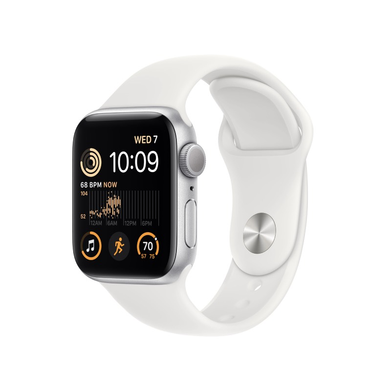
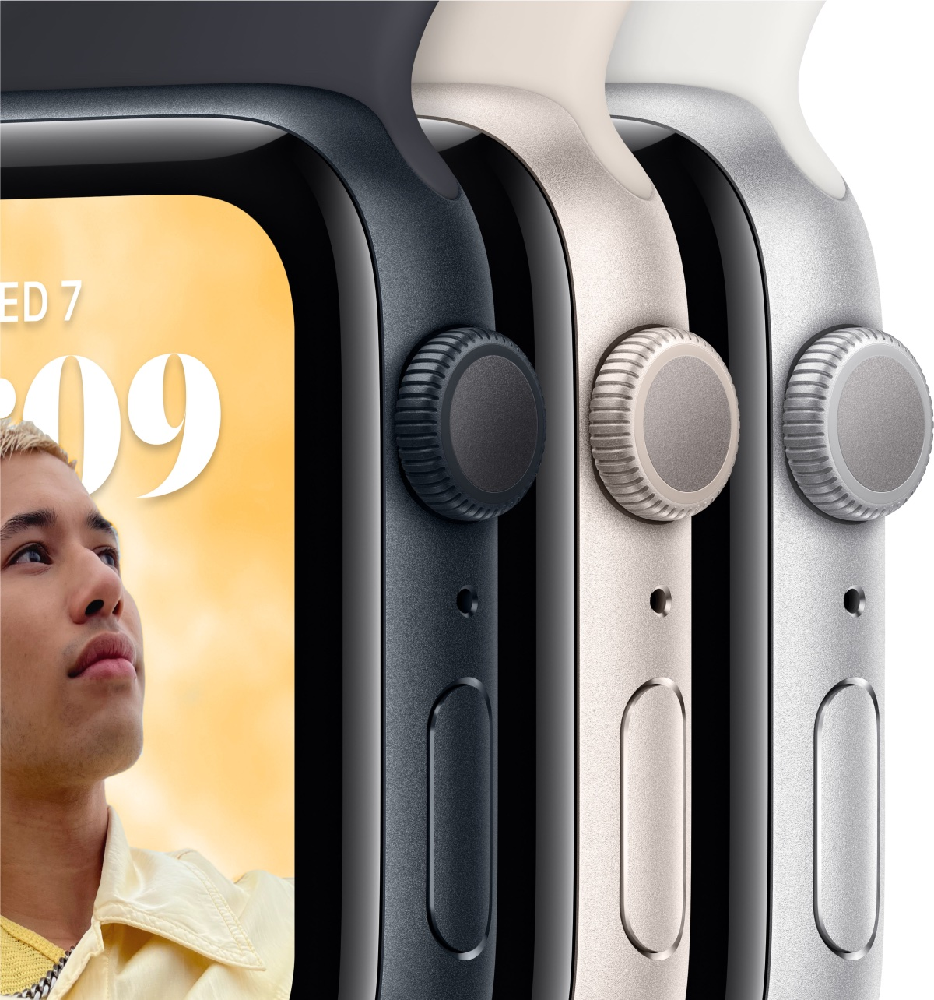
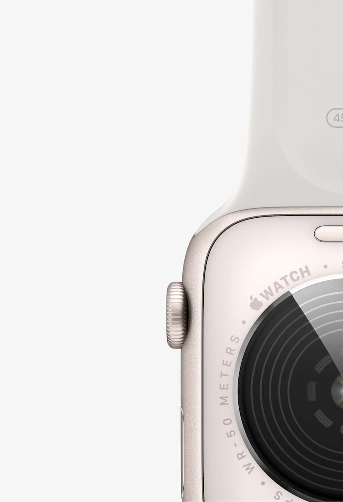
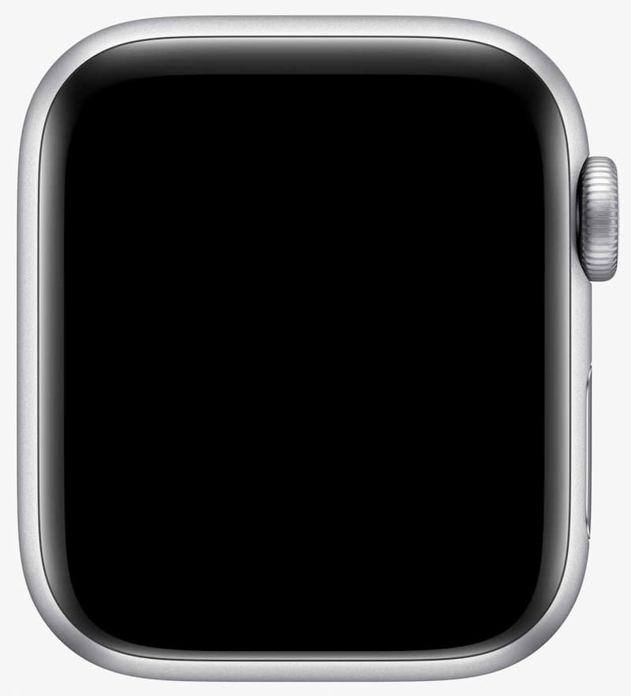
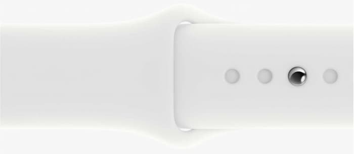
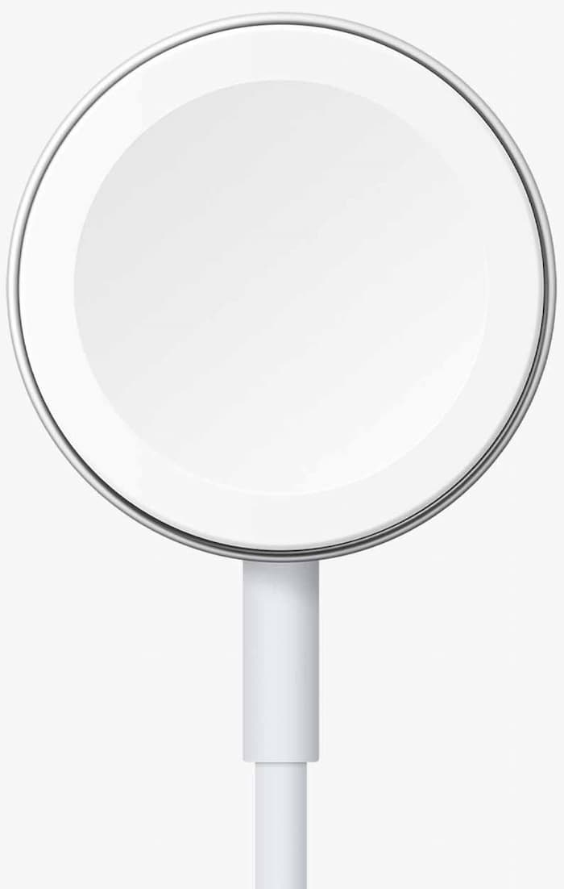

Можна закохатися.
З багатьох причин.

Основні функції для підтримання здоров’я, безпеки й активного способу життя.

Захист від води
Відстежуйте
фази сну
Функції
"Виявлення аварій"
і "Виявлення падіння"
Задня панель
відповідного
кольору

На 20%
вища продуктивність
Основні характеристики
Відповідайте на дзвінки та повідомлення просто із зап’ястя
До 20% швидший за попередній Apple Watch SE
Розширені функції безпеки, зокрема Виявлення падіння, Сигнал SOS і Виявлення аварій
Відстежуйте свою активність протягом дня з Apple Watch, а потім переглядайте тенденції в додатку «Фітнес» на iPhone
Покращений додаток «Тренування» з удосконаленими підходами до вправ
Отримуйте сповіщення про високий, низький і порушений серцевий ритм
Слухайте улюблену музику, подкасти й аудіокниги (для використання в моделях GPS)
Захист від води
Відстеження сну дає змогу дізнатися, скільки часу ви перебували у фазах швидкого, повільного та глибокого сну
watchOS 9 підтримує покращений додаток «Тренування», новий додаток «Ліки», фази сну та дає змогу краще відстежувати ритм серця
Що в комплекті

Спортивний ремінець

Кабель USB-C з магнітним кріпленням для заряджання
